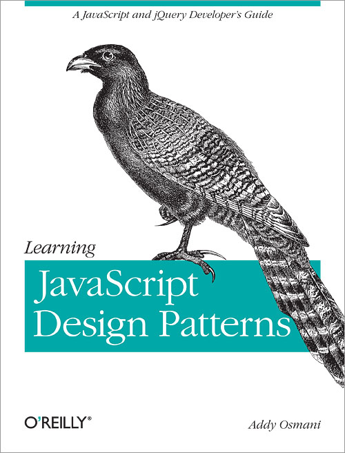

A collection of free, online, Front End Web Development books.
A remarkable number of excellent books about Front End Web Development are freely available online, if you know where to look. Here's a collection of those that I've discovered, and deigned to keep in my bookmarks.
Eloquent JavaScript:
http://eloquentjavascript.net/

Learning JavaScript Design Patterns:
https://addyosmani.com/resources/essentialjsdesignpatterns/book/
